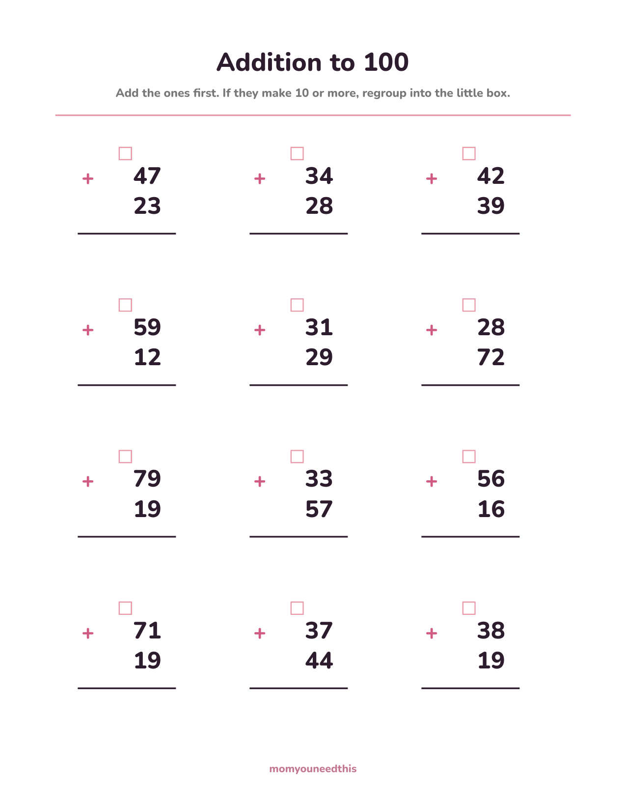
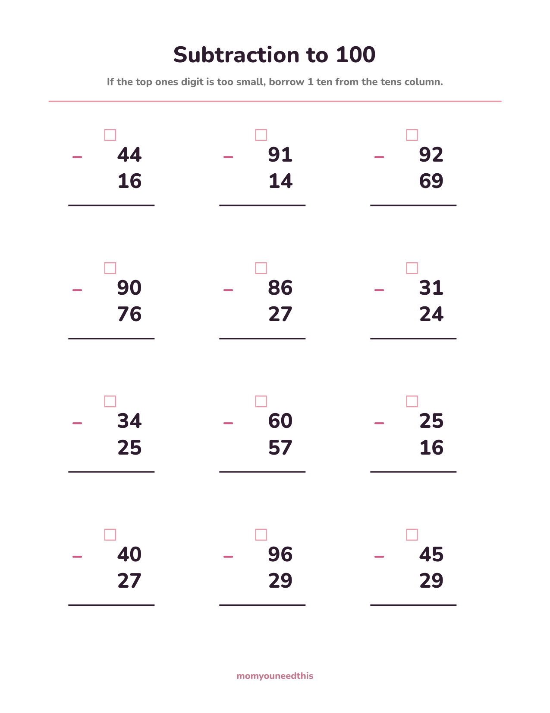
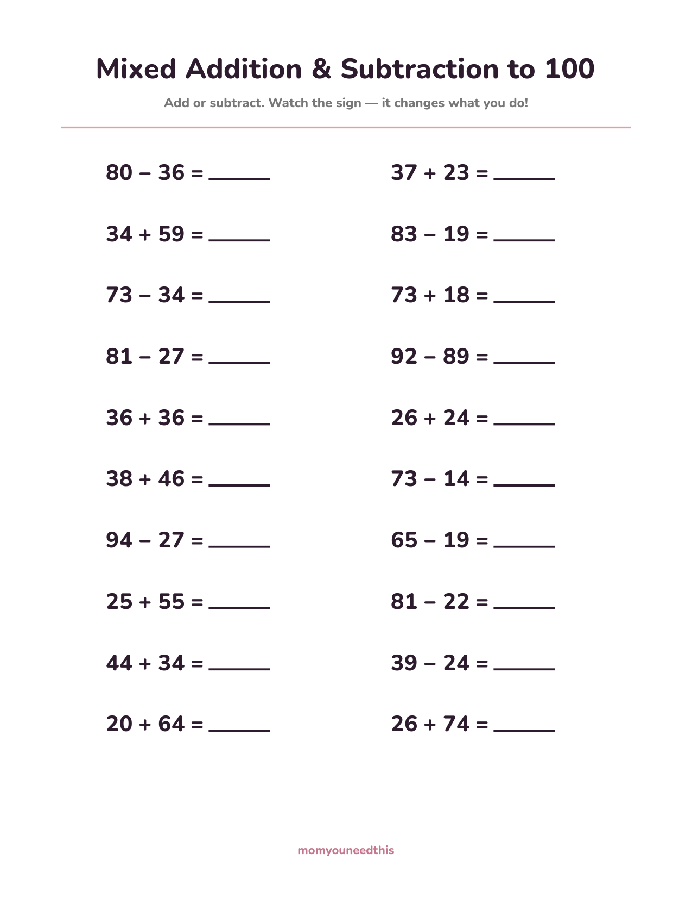
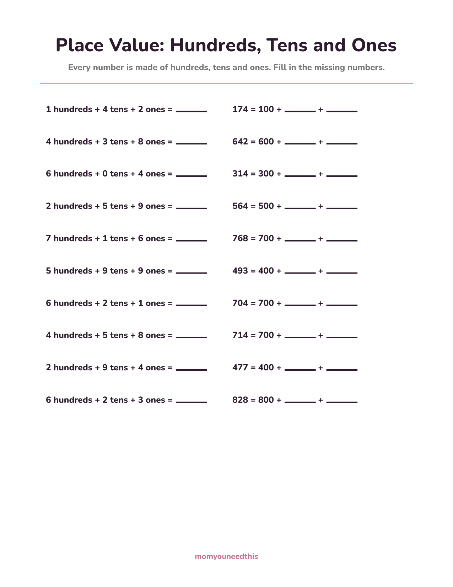
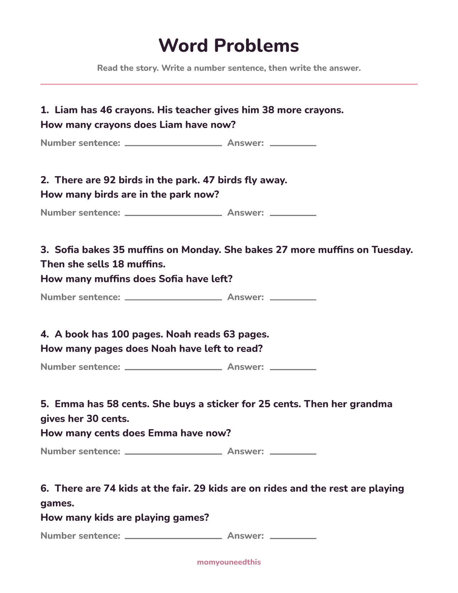

Math Worksheets for 2nd Graders Second Grade Math Worksheets: Addition & Subtraction to 100, Place Value to 1,000 & Word Problems
Second grade is the year math gets taller: two-digit numbers, carrying and borrowing, and place value that stretches into the hundreds. These worksheets for 2nd graders cover exactly that — addition and subtraction to 100 where every problem regroups, a mixed sheet that keeps both directions fresh, place value to 1,000, and word problems with a couple of two-step stories mixed in. The regrouping box is printed on every vertical problem, so the habit has somewhere to live. Made for ages 7 to 8. Nothing is timed and no answers are printed. Print at home — free, with no signup.
Last updated: November 10, 2026
Quick Answer
Five free sheets for second-grade math: addition to 100 and subtraction to 100 with 12 problems each — every one regroups — a 20-problem mixed addition-and-subtraction sheet, a place value sheet that stretches to 1,000, and a word-problem sheet with six stories, two of them two-step. Subtraction answers never go below zero. Made for ages 7 to 8, with no answers printed.
At a Glance
- Ages: 7–8 (grade 2)
- What you get: 5 worksheets — addition, subtraction, mixed, place value, word problems
- Problems: 12–20 per sheet (6 stories on the word-problem sheet)
- Answers: None printed — made to check together
- Cost: Free — no signup, no email
➕ Addition to 100
Twelve two-digit addition problems, and every single one regroups — that is the point of the sheet. Adding the ones makes 10 or more each time, so your child practices the full move: add the ones, carry the ten into the little box, then add the tens. The box is printed above every problem because second graders who write the carried ten down stop forgetting it — and forgetting it is the number-one error at this level.

➕ Download Your Free Addition to 100 Worksheet
12 problems — every one regroups
⬇️ Download Free Worksheet 🖨️ Print🎁 Free printable for ages 7–8
➖ Subtraction to 100
Twelve two-digit subtraction problems, each one built so the top ones digit is too small — borrowing is required every time. Your child practices the whole exchange: spot that the ones can't be done, trade one ten from the tens column, then subtract. It is the mirror image of carrying, and it clicks fastest when the two sheets live side by side in the same week.

➖ Download Your Free Subtraction to 100 Worksheet
12 problems — every one needs borrowing
⬇️ Download Free Worksheet 🖨️ Print🎁 Free printable for ages 7–8
🔀 Mixed Addition & Subtraction
Twenty problems to 100 that alternate between addition and subtraction without warning, just like real math. One problem wants carrying, the next wants borrowing, and the only way to know is to read the sign first — the habit this sheet exists to build. Expect the first run to be slow. The pause before each problem is the skill forming.

🔀 Download Your Free Mixed Practice Worksheet
20 problems — watch the sign
⬇️ Download Free Worksheet 🖨️ Print🎁 Free printable for ages 7–8
🔟 Place Value to 1,000
Twenty items stretch place value into the hundreds, in both directions. Half build a number from its parts — 6 hundreds + 2 tens + 3 ones = ___ — and half take one apart into expanded form: 828 = 800 + ___ + ___. A child who can move both ways owns the idea that makes three-digit addition next year feel like a small step instead of a cliff.

🔟 Download Your Free Place Value Worksheet
20 items — build it and take it apart
⬇️ Download Free Worksheet 🖨️ Print🎁 Free printable for ages 7–8
📖 Word Problems
Six stories with second-grade numbers: crayons gained by the handful, birds leaving a park, a hundred-page book with pages still to read. Four ask one clear question; two hide a second step inside — bake, bake more, then sell some — for kids ready to hold two moves in mind. Each story leaves room to write the number sentence before the answer, the habit that keeps story problems from becoming guessing games.

📖 Download Your Free Word Problems Worksheet
6 stories — two of them two-step
⬇️ Download Free Worksheet 🖨️ Print🎁 Free printable for ages 7–8
🖨️ How to Use These Worksheets
- One sheet a day is a full session. Twelve to twenty problems of two-digit work is real effort for a seven-year-old. Little and often builds the regrouping habit; a big stack builds resistance.
- Say the move out loud. “Ones first. Too big? Carry. Too small? Borrow.” Narrating the steps feels silly for a day and then quietly becomes how they think — most regrouping errors are skipped steps, not weak math.
- Base-ten blocks are allowed. Counters, drawn tens sticks, real coins — second graders are meant to model with them. A child who can show 47 + 38 with blocks understands the carried ten; the pencil work is just the shorthand.
- Check together and ask how. A correct answer with a shaky method and a wrong answer with a good method are both useful information. Ask, don't just mark.
📈 Grade Level Is a Guide, Not a Gate
Worksheets are labeled by grade, but children are not, and the label matters less than the fit. If the to-100 sheets still feel big, there is no penalty for dropping back: our first grade math worksheets firm up addition and subtraction within 20, and a confident week there makes this page easier, not later. The reverse is true too — a second grader who flies through all five sheets is telling you they are ready for three-digit numbers and the first taste of multiplication. The path is a staircase, not a schedule, and standing on a step until it feels solid is how the next one gets climbed.
⏱️ Fluency Without the Stopwatch
Nothing on these pages is timed, and that is a choice. By second grade the to-20 facts should be getting automatic — working memory spent recalling 8 + 7 is working memory not spent on the carrying. The strategies that got them there still count, and two-digit work adds one more: add the tens, then the ones. A child who owns the strategies gets fast on their own. Racing a timer before the strategies exist teaches guessing; building them first makes the timer unnecessary.
➕ More Math for Moms & Kids
🔢 First Grade Math Worksheets
The step before this one: addition and subtraction within 20 and place value with tens and ones. Review first grade.
➕ Carrying & Borrowing
More two-digit regrouping practice — page after page of just this one move. Practice carrying.
✖️ Multiplication Worksheets
The next staircase step: equal groups and the first times tables. Peek at multiplication.
🧒 Older Kids Hub
Every worksheet and practice page for ages 5–8 in one place. Browse Older Kids.
❓ Second Grade Math FAQ
What math worksheets for 2nd graders are on this page?
Five: addition to 100, subtraction to 100, a mixed addition-and-subtraction sheet, a place value sheet that reaches 1,000, and a word-problem sheet with six stories. The addition and subtraction sheets are built so every problem regroups — carrying and borrowing are the heart of second-grade math.
What is regrouping, and why does every problem use it?
Regrouping is trading ten ones for one ten — called carrying in addition and borrowing in subtraction. It is the main new skill of second-grade math, so these sheets don't dilute it: every addition problem makes 10 or more in the ones column, and every subtraction problem starts with a top ones digit that is too small. The little box printed above each problem is where the traded ten gets written down.
How many problems are on each sheet?
Twelve on each of the addition and subtraction sheets — vertical problems take more room and more thinking each. Twenty on the mixed sheet and the place value sheet, and six stories on the word-problem sheet, two of them two-step.
Do the subtraction answers ever go negative?
No. Every subtraction starts with the bigger number on top, so answers are always zero or more. Negative numbers are a later-grade idea, and second graders should never meet one by accident on a practice sheet.
What should my child know before these sheets?
Addition and subtraction within 20, and a working idea of tens and ones. If two-digit numbers are brand new, start with the first grade math worksheets to firm up the to-20 facts — these sheets reuse those facts inside every regrouping problem, so nothing learned there is wasted.
Are these math worksheets for 2nd graders free?
Yes — all five sheets are free to print at home, with no signup, no account and no email. Print fresh copies as often as you like; meeting regrouping on different days is how the move becomes automatic.